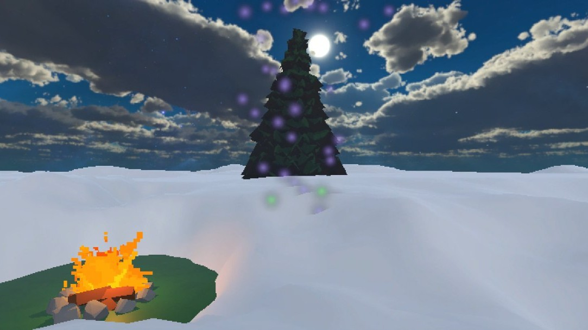
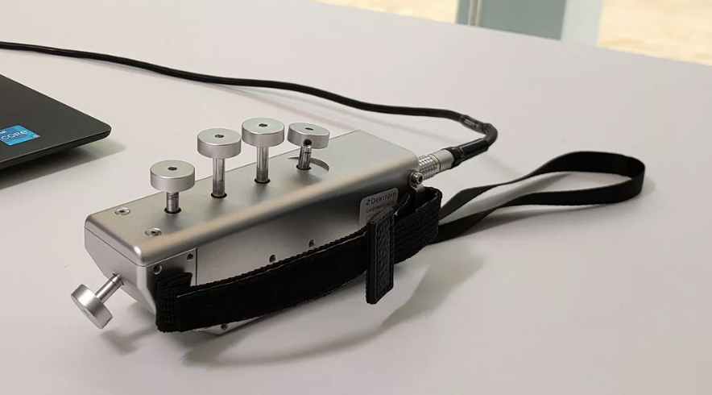
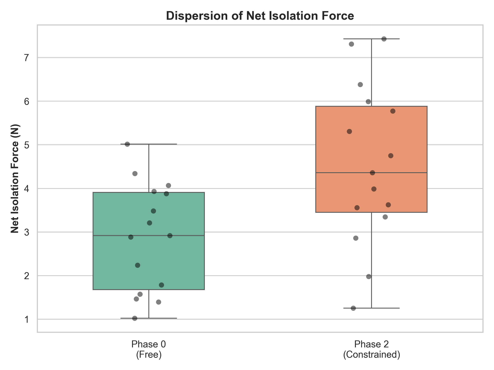
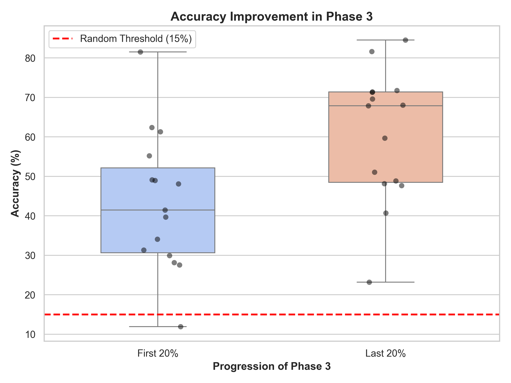

Clinical research
Forest of Senses
An audio-visual environment that induces measurable motor adaptation without giving a single instruction, driven by a five-finger isometric force sensor.

Context
Conventional interactive rehabilitation relies on explicit instructions: “press this finger, reach this target, hold for N seconds.” That guarantees the task is understood, but it also smothers spontaneous exploration — and with it the intrinsic motivation that keeps a patient going through a whole session.
Forest of Senses starts from the opposite hypothesis: motor adaptation can be induced without ever giving an instruction. The environment targets two axes useful in post-stroke recovery: finger individuation (inhibiting synkinesis) and sub-maximal force regulation (aiming precisely at an invisible force target).
Approach
The isometric forces of the five fingers are captured by the Dextrain Manipulandum (~14 Hz) and fed into a Unity environment. A four-phase state machine progressively changes the contingency between effort and feedback (a “winner-takes-all” rule, a virtual fatigue gauge, an invisible sub-maximal target) without ever revealing it.
No interface, no score, no timer, no text: the scenery signals progress (embers → fire and stars → dawn → snowmelt). The shift from winter to spring echoes the gradual, non-linear return of motor function that characterises post-stroke recovery. Feedback is audio-visual: particles, sky, chords; in phase 3, the tempo and filtering of a familiar track become the reward signal.
Every frame is logged to CSV and analysed offline in Python (Wilcoxon signed-rank test, Cohen's d).
“With this sensor, you control what happens in the world. Explore freely. There are 4 phases; the first is just a one-minute calibration phase.” — the only instruction given.

Result
Pilot study on 15 healthy subjects (21–63 years old):
- Net isolation force: 2.88 N → 4.53 N (+57%), p = 0.0020, d = 0.99.
- Sub-maximal accuracy: 43.4% → 60.4% (+39%), p = 0.0054, d = 0.86.
- 86.7% of subjects (13/15) consciously identified the isolation rule; the auditory modality dominated over the visual one.


Skills
Demo & code
The environment depends on a research sensor: it cannot be launched from the repository. Video captures (watch with sound) and the full paper are available in the repo.